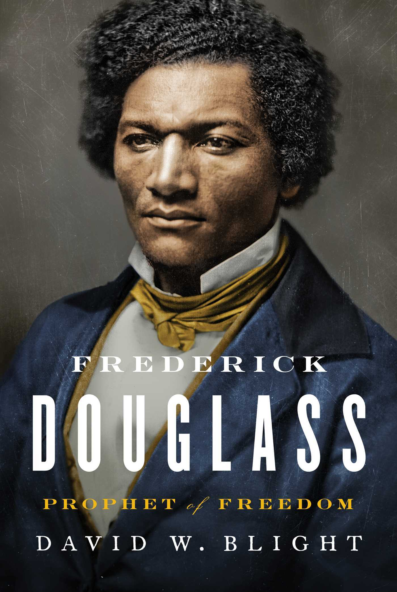

Frederick Douglass
⭐️⭐️⭐️⭐️
Format: audio (36 hours 57 minutes)
- Previously: Educated
- Next: The Hate U Give
What an interesting man. His origin wasn't his result, but it sure helped in his perspective. He obviously had an extremely keen mind, fortunately accompanied by a fantastic ability to translate those thoughts into words. I'm glad I could get to know Frederick Douglass a bit better, and gain some understanding for what he, and so many others, went through. I'm glad he pushed onward with his pen and voice. What a hero he is/was to getting our nation closer to what it can/should be.
Fred's impatience with change was both a benefit and drawback, but I loved that he simply kept pushing for it. I feel like the tides had turned with the Emancipation Proclamation, or at least in its aftermath. Had a complete waste of space not screwed up things in post-civil war reconstruction (seriously - Andrew Johnson was a really racist turd on legs), I feel like even larger strides would have continued to be made within the life of Frederick Douglass.
As for the writing of this book - the author was effusive in his praise for Douglass, and frequently called him by various nicknames. In commenting on some of his speeches, the author would simply say how well Douglass made a point, but wouldn't necessarily illustrate that with excerpts of the speech. He included lots of Douglass' thoughts - both from speeches and his multiple autobiographies, but considering how pivotal certain speeches were, I wish more excerpts (and potentially some more historical context) would have been provided. Regardless, I can only imagine the daunting task of trying to review the hundreds and hundreds of thousands of words that were left by Frederick Douglass, and attempting to come up with a biography for one of America's real heroes.
Should you read this book? I read it because I'm fascinated by events and people of this era. Had I not been, it may have felt like a real slog to get through. He's a fascinating person... but he didn't die young.